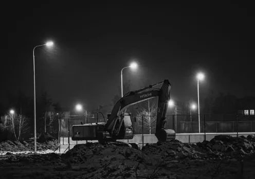
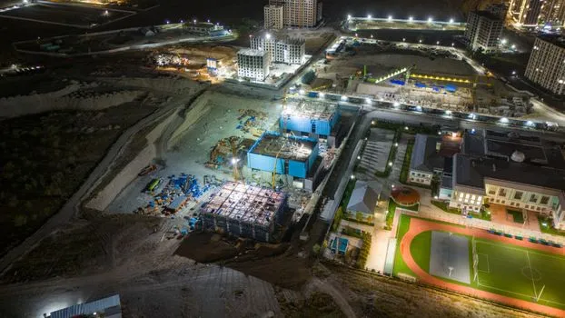
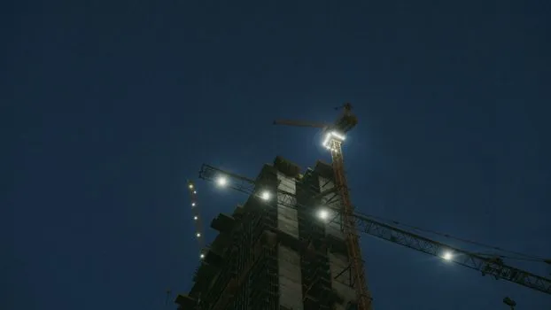
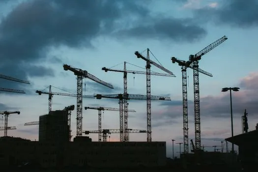

7255882A monochrome night scene of an excavator under streetlights in an open area.

7255882A monochrome night scene of an excavator under streetlights in an open area.

28842903A vibrant aerial shot of a construction site at night with buildings and lights.

7168444Illuminated tower cranes at a construction site captured during nighttime.

10143241Multiple construction cranes silhouetted against the evening sky, capturing industrial progress.